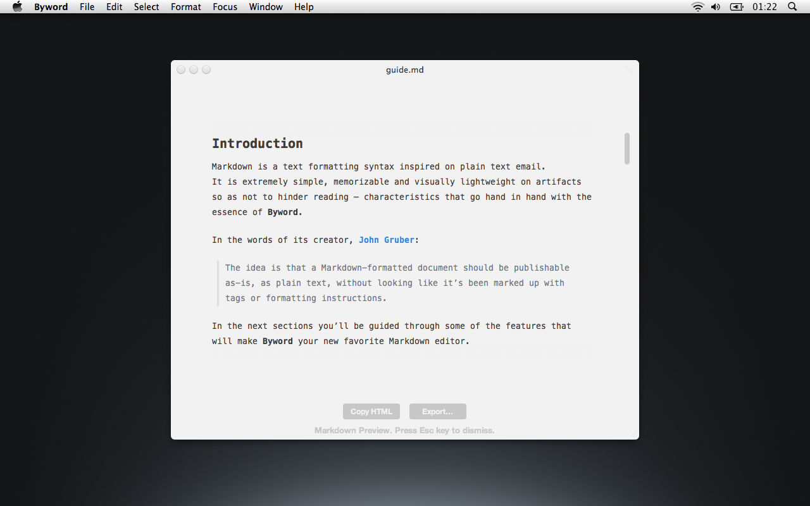
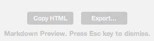
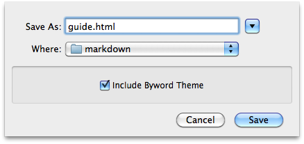

Byword MultiMarkdown Guide
Summary
- Introduction
- Syntax reference
- Editing markdown documents
- Preview mode
- Exporting documents
- MultiMarkdown highlights
Introduction
Markdown is a text formatting syntax inspired on plain text email. It is extremely simple, memorizable and visually lightweight on artifacts so as not to hinder reading – characteristics that go hand in hand with the essence of Byword.
In the words of its creator, John Gruber:
The idea is that a Markdown-formatted document should be publishable as-is, as plain text, without looking like it’s been marked up with tags or formatting instructions.
In the next sections you’ll be guided through some of the features that will make Byword your new favorite Markdown editor.
Syntax Reference
If you’re unfamiliar with Markdown’s syntax, please spare a couple of minutes going through the syntax guide. Otherwise, just go ahead and skip to the next section.
Editing Markdown documents
This section is dedicated to introduce you to the differences between editing plain/rich text documents and Markdown documents.
Creating new documents
To create a Markdown document, head to the File menu and select “New Markdown document” or simply press the shortcut ⇧⌘N.
NOTE
You can convert a plain text document to a Markdown document by going to the “Format” menu and pressing ⌥ to reveal Markdown conversion option or pressing the combination ⌥⇧⌘T.To confirm that you’re editing in Markdown mode, look at the counters at the bottom of your screen. If the counters are not visible, you can enable them by using the shortcut ⇧⌘K .
Opening documents
Markdown documents are opened like any other document, but Byword will only recognize and activate Markdown features if the file is bearing a well-known extension.
The recognized extensions are .md, .markdown, .mdown and .markdn.
If the document does not have one of these well-known extensions, you can always enable Markdown features by converting the file (⌥⇧⌘T).
NOTE
While Markdown does not have an official extension we recommend the usage of.md, as it’s the most widely adopted one.
Handy shortcuts
Even though Markdown’s formatting syntax is light, there are a couple of commonly used style artifacts that force your hands out of their natural stance when typing – bold and italic.
Byword preserves the hotkeys widely used for these effects. If you’re about to write a word in bold or italic, just type ⌘B or ⌘I and it will place the corresponding formatting elements in place and advance the cursor. You can also select a word and apply the style or, conversely, select a word wrapped by these styles and Byword will remove them for you.
Images
If you drag images into the text, they will automatically be replaced by a Markdown reference to the file.
Due to Byword’s MultiMarkdown support you can even add custom attributes to your images, altering the way they’re displayed. Please refer to Custom attributes section on the MultiMarkdown highlights chapter for more details.
NOTE
Keep in mind that when dragging images to the text, Byword will introduce a reference to that file’s location on your disk (noticeable by thefile:prefix). When publishing online, make sure you update this reference, otherwise you’ll run into broken links.
Preview mode
Markdown is often used as source to generate documents under more commonly used publishing formats like HTML. The fact that it’s an extremely simple, plain text based formatting syntax pretty much turns any text editor into a Markdown editor.
Byword expands the concept of a markdown editor by giving you the option to preview your text. At the distance of a shortcut (⌥⌘P), you can get a feel of how your writings will look like.
The preview mode will render the text using your current style settings. To dismiss this mode and go back to editing, just hit the Escape key.
Exporting documents
In the vast majority of times, you will be using Markdown for its raison d’être – as a source format to generate HTML. Byword let’s you export the HTML output in two ways:
- Copy the HTML output directly to your clipboard – so you can conveniently paste it into your favorite HTML editor[1];
- Export to a file.
We know how much you love Byword’s aesthetics so we even added a little bonus to the option of exporting to a file.
Including Byword’s theme in the exported file will give you an exact copy of what you see in the preview mode. With this option enabled, font type, size and text width will be preserved when the output file is generated.
MultiMarkdown highlights
As useful as Markdown is on its own, MultiMarkdown extends it with many features. This section will briefly introduce you to the most interesting of them.
NOTE
For a comprehensive reference, please refer to Fletcher T. Penney’s MultiMarkdown user guide.
Cross-references
Cross-references will become your new best friend when writing long documents. They will highly improve the navigability of the generated documents by giving the reader links to jump across sections with a single click.
Example
Clicking [here][section-preview] will lead you to the **Preview** section.
Result
Clicking here will lead you do the Preview section.
Footnotes
Footnotes are a simple, yet effective way of conveying non-crucial information to the reader.
Rather than parenthesizing a side note or place it between em-dashes – as unimportant as it is, the reader will go through it, just like you did now – you can defer its reading and expand on your thoughts there.
Example
Clicking this number[^fn-sample_footnote] will lead you to a footnote.
[^fn-sample_footnote]: Handy! Now click the return link to go back.
Result
Clicking this number[2] will lead you to a footnote.
Custom attributes
MultiMarkdown introduces an unobtrusive way of adding custom attributes to images and links, allowing you to change they way they are displayed.
NOTE
This is not available for inline links or images.
Example
The original image is 128x128 and contains no shadow.
![Original icon][img-icon_original]
It will be displayed as 96x96 with a subtle shadow.
![Styled icon][img-icon_styled]
[img-icon_original]: img/icon128.png "B"
[img-icon_styled]: img/icon128.png "B" width="96px" height="96px"
class="shadow"
Result
The original image is 128x128 and contains no shadow.

It will be displayed as 96x96 with a subtle shadow.
Meta information
With MultiMarkdown, you can also embed metadata on your documents.
Metadata must be placed at the top of the document – there can be no white-spaces before – and it ends with the first empty line. Each entry is composed of key and values, separated by a colon (:).
There are plenty of keys supported, some of the most common being Title, Author, Date, Copyright, Keywords and Email. Be sure to check Fletcher’s guide for a full reference.
TIP
When adding metadata information to your documents, make sure you always leave two spaces at the end of each metadata line. This will ensure that exporting to plain Markdown will result in a properly formatted piece of text – as opposed to a single run-on paragraph.
Example
Title: Document title
Author: John Doe
Jane Doe
Date: January 1st, 2012
Tables
Tables are perfect to display structured data in rows and columns. MultiMarkdown supports the generation of tables by using a couple of simple rules alongside the use of the pipe character – |.
Example
| First Header | Second Header | Third Header |
| :------------ | :-----------: | -------------------: |
| First row | Data | Very long data entry |
| Second row | **Cell** | *Cell* |
| Third row | Cell that spans across two columns ||
[Table caption, works as a reference][section-mmd-tables-table1]
Result
| First Header | Second Header | Third Header |
|---|---|---|
| First row | Data | Very long data entry |
| Second row | Cell | Cell |
| Third row | Cell that spans across two columns | |
Structure
If you are familiar with HTML tables, you’ll instantly recognize the structure of the table syntax. All tables must begin with one or more rows of headers, and each row may have one or more columns.
These are the most important rules you’ll be dealing with:
- There must be at least one
|per line; - After the header rows, there must be a line containing only
|,-,:,., or spaces; - Cell content must be on one line only;
- Columns are separated by
|.
Alignment
To align the data cells on the table, you need to introduce a special row right after the headers, that will determine how the following rows – the data rows – will be aligned.
| Header One | Header Two | Header Three | Header Four |
| ---------- | :--------- | :----------: | ----------: |
| Default | Left | Center | Right |
| Header One | Header Two | Header Three | Header Four |
|---|---|---|---|
| Default | Left | Center | Right |
The placing of the colon (:) is optional and determines the alignment of columns in the data rows. This line is mandatory and must be placed between the headers and the data rows.
Also, the usage of the | at the beginning or end of the rows is optional – as long as at least one | is present in each row.
Column spanning
To make a cell span across multiple columns, instead of using a single pipe (|) character to delimit that cell, use the number of pipes corresponding to the columns you wish to span.
| Column 1 | Column 2 | Column 3 | Column 4 |
| -------- | :------: | -------- | -------- |
| No span | Span across three columns |||
| Column 1 | Column 2 | Column 3 | Column 4 |
|---|---|---|---|
| No span | Span across three columns | ||
NOTE
This is only an introduction to MultiMarkdown’s tables. For the full reference, please refer to the “Tables” section on the MultiMarkdown user guide.
If you have any doubts don’t hesitate to contact us via email at byword@metaclassy.com or via Twitter at @bywordapp or @metaclassy.
Enjoy,
The Byword team.